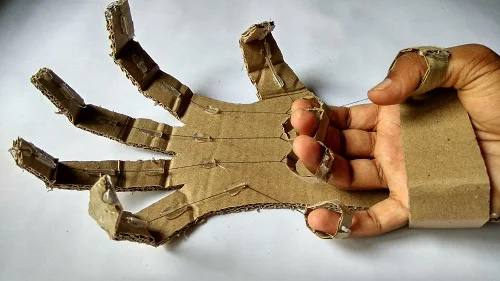

Using AI to Optimize Bridge Safety
Bridges are vital components of transportation infrastructure, but their safety is often threatened by age, weather, material fatigue, and increasing traffic loads. Traditional methods for assessing structural health rely on periodic inspections, which are time-consuming, costly, and often limited in scope. In recent years, Artificial Intelligence (AI) has emerged as a transformative tool for improving the monitoring and maintenance of bridge safety — even in student-led research projects.
AI systems can analyze large volumes of sensor data in real time, allowing engineers to detect early warning signs of structural stress or deterioration. For example, accelerometers and strain gauges placed on a bridge can transmit data continuously to a central server. Machine learning algorithms then process this data to recognize patterns, identify anomalies, and predict the likelihood of failure before it happens. One practical application is anomaly detection in vibration signals — if a certain area of the bridge vibrates abnormally under traffic load, it could indicate a developing crack or loosening joint.
A 2023 project by students inspired from the Technical University of Munich involved using convolutional neural networks (CNNs) to analyze high-resolution images of bridges taken by drones. The AI system was trained to detect surface-level damage like rust, corrosion, and cracks. According to their report, the system achieved an accuracy of 92% in identifying surface flaws that human inspectors often miss. This approach not only improves reliability but also reduces the need for dangerous manual inspections.
Another promising use of AI is predictive maintenance. By combining data from multiple sources — including traffic density, weather conditions, and material degradation over time — AI can help schedule optimal maintenance intervals, reducing both costs and the risk of catastrophic failure. A pilot program in South Korea recently used AI to manage 600 bridges. The results were promising: incidents of unexpected structural faults dropped by 35%, and repair costs were reduced by over 20% compared to previous years.
Even at the high school or undergraduate level, students are exploring these possibilities. A group of engineering students in India built a low-cost system using Arduino sensors and Python-based machine learning to detect stress changes in small model bridges. Their prototype was able to alert users in real-time when pressure exceeded safe limits — demonstrating how accessible and impactful this technology can be.
In the future, AI will likely play a central role in structural health monitoring (SHM). With advancements in sensor miniaturization and cloud computing, we can expect these systems to become even more affordable and scalable. For students, this field offers exciting opportunities to work at the intersection of civil engineering, data science, and public safety. By embracing AI now, the next generation of engineers can help build infrastructure that is not only smarter but significantly safer for everyone.
— Written by Zharas Nurgali, a high school student from Kazakhstan interested in AI, civil engineering, and sustainable infrastructure.
Solar Power on a Student Budget

Solar power is often seen as a luxury — something reserved for wealthy homeowners or high-budget institutions. But with the right mindset and a little resourcefulness, students can build their own solar-powered solutions without breaking the bank. In this article, we explore how students around the world, including Kazakhstan, are finding creative ways to make clean energy affordable and educational.
At the core of any solar project is the photovoltaic (PV) panel — a device that converts sunlight into electricity. While commercial solar setups can be expensive, second-hand or small-scale panels are widely available online or through local electronics markets. Many students begin with 10W or 20W panels, which are enough to power LED lights, charge power banks, or run mini-ventilation systems.
One popular project among school science clubs is the creation of a solar charging station. Using a small panel, a voltage regulator, a rechargeable battery, and some basic wiring, students can build a station that charges their phones or calculators. Not only does this save electricity, it also sparks curiosity about circuits, current, and energy storage.
In Almaty, a student-led team designed a solar-powered greenhouse that could function even during Kazakhstan’s cold winters. They used plastic bottles for insulation, black-painted barrels for thermal mass, and solar panels to power a small ventilation fan and light. Their prototype allowed for year-round herb cultivation — all at a cost under $50.
Beyond projects, solar energy opens doors for understanding broader topics like climate change, energy justice, and engineering innovation. For example, rural regions in Kazakhstan often lack stable electricity. Students who understand the basics of off-grid solar systems — including battery storage and inverters — can design low-cost solutions that have real social impact. NGOs and local schools are increasingly interested in student partnerships for these kinds of projects.
Software tools like PVWatts and Tinkercad Circuits allow students to simulate panel output based on sunlight levels, angles, and system size. These tools help users understand how panel efficiency changes with geography, season, and design — knowledge that is essential in real-world engineering.
Importantly, many of these projects align with university entrance portfolios, STEM competitions, and science fairs. The combination of sustainability and technical skill is especially attractive to admissions officers and scholarship committees.
Solar power is more than just a technology — it’s a mindset. When students experiment with solar DIY setups, they’re not just learning physics and electronics. They’re embracing independence, responsibility, and long-term thinking. Whether you’re looking to charge your devices for free or launch a green energy startup, the path starts with curiosity and one small panel.
— Written by Aisulu Darmen, a 17-year-old student from Shymkent passionate about renewable energy and sustainable engineering for underserved regions.
Building a Cardboard Robot Arm

Robotics often seems like a field that requires expensive kits, 3D printers, and expert-level coding. But for many beginner engineers, starting small and simple can be just as rewarding — and just as educational. One of the most accessible entry points into robotics is building a working robotic arm from cardboard. This hands-on project teaches core mechanical principles using affordable materials that can be found in almost any household.
The robot arm consists of several joints — typically shoulder, elbow, and wrist — just like a human arm. The first step is to design the basic layout on paper. Then, using thick cardboard, students can cut out the arm’s components and attach them using metal paper fasteners, skewers, or even hot glue. By maintaining joint mobility, students begin to understand mechanical degrees of freedom and basic kinematics.
For actuation, many students use hydraulic or pneumatic systems made with syringes and flexible tubing. When one syringe is pushed, fluid moves into another syringe connected to the joint, causing it to bend. This creates a working model of hydraulic motion — the same principle used in real industrial robots and machinery. It's a tactile way to learn about pressure, force transfer, and the physics of motion.
A team of students developed a three-fingered cardboard robotic hand powered entirely by water-filled syringes. They fine-tuned the finger lengths and angles for gripping different shapes. Their final version could pick up a pen, hold a plastic cup, and even type short messages on a keyboard. The total cost? Less than $10 — most of it spent on glue and tubing.
What’s powerful about this project is that it merges physics, engineering, and creativity. Students learn about levers, torque, center of mass, and structural integrity — all while building something they can demonstrate. It also gives them a chance to develop problem-solving skills: What do you do when a joint doesn’t move as expected? How do you balance strength and flexibility? These questions lead to real engineering thinking.
For those looking to go further, the cardboard arm can be upgraded with servos and Arduino boards. This introduces basic electronics and programming into the mix. Students can code their arms to move in response to button inputs, light sensors, or even gestures. But even without electronics, the mechanical foundation built through cardboard models provides a solid springboard into more complex robotics projects.
In a world where robotics education is often inaccessible due to cost, DIY models like this one remind us that innovation doesn't need to be expensive. It starts with an idea, a little patience, and a willingness to fail and improve. More importantly, it shows students that engineering is not just about tools — it’s about problem-solving, curiosity, and making things move.
— Written by Daniyar Yessengali, a 16-year-old student from Taraz who loves mechanical design and dreams of working in the aerospace industry.
Python for Structural Calculations
Engineering students are increasingly turning to Python, a beginner-friendly and powerful programming language, to solve real-world problems. In the field of structural engineering, Python offers a flexible and open-source way to perform calculations, visualize stress distributions, and simulate structural behaviors — all without the need for expensive software like MATLAB or ANSYS.
At its core, structural engineering involves analyzing forces and designing components like beams, columns, and trusses to ensure safety and efficiency. These calculations can be tedious by hand, but Python helps automate them. For example, using the NumPy library, students can write scripts that compute shear forces and bending moments along a beam based on various loads. This not only saves time but also allows for easy experimentation with design alternatives.
A student project in Almaty involved building a Python-based tool to analyze cantilever beams under uniform and point loads. The script allowed users to enter beam length, load intensity, and modulus of elasticity, then output deflection and moment diagrams. Visualization was done using Matplotlib — a popular Python library that turns raw data into charts and graphs. This helped students better understand where the maximum stress occurs in a beam and how design changes influence performance.
Python also supports symbolic math through libraries like SymPy. This is useful for solving equations with unknowns — such as determining reactions at supports or solving for deflections. Students can check their hand-written derivations and quickly verify whether their results are correct, a valuable feature during exams or lab assignments.
Beyond statics, students use Python for analyzing truss systems, calculating buckling loads, and simulating harmonic oscillations in dynamic systems. Tools like PyNite (a structural analysis library) offer the ability to model full 2D or 3D frames and get nodal displacements and internal forces. While it may take some time to learn the syntax, tutorials and GitHub repositories make it highly accessible to self-learners.
For many, the appeal lies in Python's low barrier to entry and high ceiling. You can start with basic arithmetic and loops, then move on to solving matrix equations and plotting load diagrams — all with free tools. It also integrates well with spreadsheets and CSV files, so students can analyze large datasets from experiments or simulations with ease.
As engineering becomes more data-driven, coding is no longer optional. Python equips students not just with a technical tool but with a mindset of automation and optimization. Whether it’s for class assignments or real-world design, knowing how to make a machine do your math is an empowering skill — and one that bridges the gap between theory and practice.
— Written by Aigerim Sadykova, an 18-year-old civil engineering student from Almaty who is passionate about structural design and automation in construction.
Intro to ChatGPT for Engineering Students

As engineering students navigate complex topics like thermodynamics, circuits, and mechanics, finding clear and fast answers can be a challenge. That’s where ChatGPT, an AI-powered language model, comes in. While originally designed for conversational use, many students are now discovering how ChatGPT can assist in their academic and project-based work — from generating explanations to debugging code.
ChatGPT works by predicting likely word sequences based on your prompt, which allows it to provide definitions, summarize concepts, and walk you through problem-solving steps. For example, a mechanical engineering student can ask, “Explain the difference between shear stress and normal stress with examples,” and get a response that’s structured in plain English. The AI can also rephrase explanations for different levels of understanding, which is especially helpful when textbooks are too dense or unclear.
At a local STEM club, a group of students used ChatGPT to generate alternative design ideas during a sustainable housing challenge. They asked the model for low-cost insulation materials for harsh winters in Kazakhstan, and it suggested straw bale walls, aerogel sheets, and recycled denim — all supported by brief explanations. Although students had to verify the info, ChatGPT acted like a creative brainstorming partner.
Engineering often involves coding, and ChatGPT can assist here too. For example, when writing a Python program for a statics calculator, students can ask the model for syntax correction or help with logic errors. It doesn’t always get it right the first time, but with good prompts and follow-up questions, ChatGPT becomes a helpful debug companion. Many students report that it saves time and teaches them better ways to write clean, modular code.
Another benefit is formatting. Engineering reports often require structured documentation with proper headings, citations, and technical tone. ChatGPT can help draft abstracts, rewrite passive voice sentences, or suggest formatting for project summaries. Of course, students should still apply their own judgment and check for accuracy — but the AI makes the process faster and smoother.
It’s important to note that ChatGPT doesn’t replace learning. It’s a support tool — not a replacement for understanding concepts, doing calculations, or meeting academic integrity rules. Teachers increasingly recommend using AI tools like ChatGPT as long as students disclose their use and ensure originality.
In Kazakhstan, where access to tutors or technical books can be limited in some regions, AI models provide equalizing support. With internet access and curiosity, students from small towns can now engage with high-level engineering topics at their own pace. ChatGPT helps bridge language gaps too, offering Kazakh- or Russian-friendly explanations when English materials are hard to follow.
In short, ChatGPT empowers engineering students to ask better questions, learn faster, and create with more confidence — as long as it’s used wisely and ethically. Whether you're designing circuits or writing lab reports, it’s like having a study partner who never sleeps.
— Written by Yerzhan Kalyk, 15 year-old student from Pavlodar, who explores the use of AI in education and design thinking.
Basics of CAD Modeling

Computer-Aided Design (CAD) is one of the most essential tools in modern engineering. From aerospace to product design, CAD allows engineers to visualize, simulate, and refine their creations before any physical prototype is built. Learning the basics of CAD modeling gives students a head start in both academic and industry settings — and it's more accessible than ever.
CAD software comes in many forms, with popular programs including AutoCAD, SolidWorks, Fusion 360, and FreeCAD. While each has its own interface and specialties, they all follow the same foundation: sketch → extrude → refine. Students begin by drawing 2D shapes like circles, rectangles, and splines. Then, those sketches are turned into 3D models through operations like extrusion, lofting, and revolving.
One of the key benefits of CAD is precision. Unlike hand-drawn blueprints, CAD allows engineers to define dimensions down to a fraction of a millimeter. This is essential when designing components that must fit together, like gears or enclosures for electronics. CAD also reduces design errors, thanks to constraint tools that keep parts aligned and properly shaped.
At a technical lyceum in Almaty, students used Fusion 360 to design parts for a small robotic vehicle as part of a local robotics competition. They modeled the wheel hubs, chassis, and servo motor brackets, then 3D printed the components. Their vehicle placed third — but more importantly, the team gained real-world skills in digital prototyping and mechanical design.
CAD modeling is also important for interdisciplinary projects. In architecture, CAD helps visualize building layouts, lighting, and HVAC systems. In biomedical engineering, students use it to model prosthetics and medical tools. For makers and hobbyists, CAD allows personalized creations — from phone holders to drone parts — to be fabricated with 3D printers or CNC machines.
For beginners, cloud-based tools like Tinkercad or Onshape are excellent starting points. These platforms run in a browser and don't require high-end computers. They offer drag-and-drop interfaces, tutorials, and easy export options for 3D printing. As students advance, they can transition to more complex software that supports assemblies, simulation, and rendering.
Learning CAD modeling doesn't just build technical skill — it changes how students think. They begin to visualize objects in layers and steps, consider how forces act on structures, and break problems into sequences. It also fosters creativity: designing a drone frame, a solar lamp, or a bridge span becomes an act of problem-solving and imagination.
For any student interested in engineering, architecture, or product design, CAD is a gateway to making ideas real. It’s not about being perfect from the start — it’s about exploring possibilities, building digital confidence, and preparing for a future where design and innovation go hand in hand.
— Written by Nurai Imanbek, a 17-year-old STEM student from Kokshetau, passionate about robotics, CAD, and engineering for social impact.